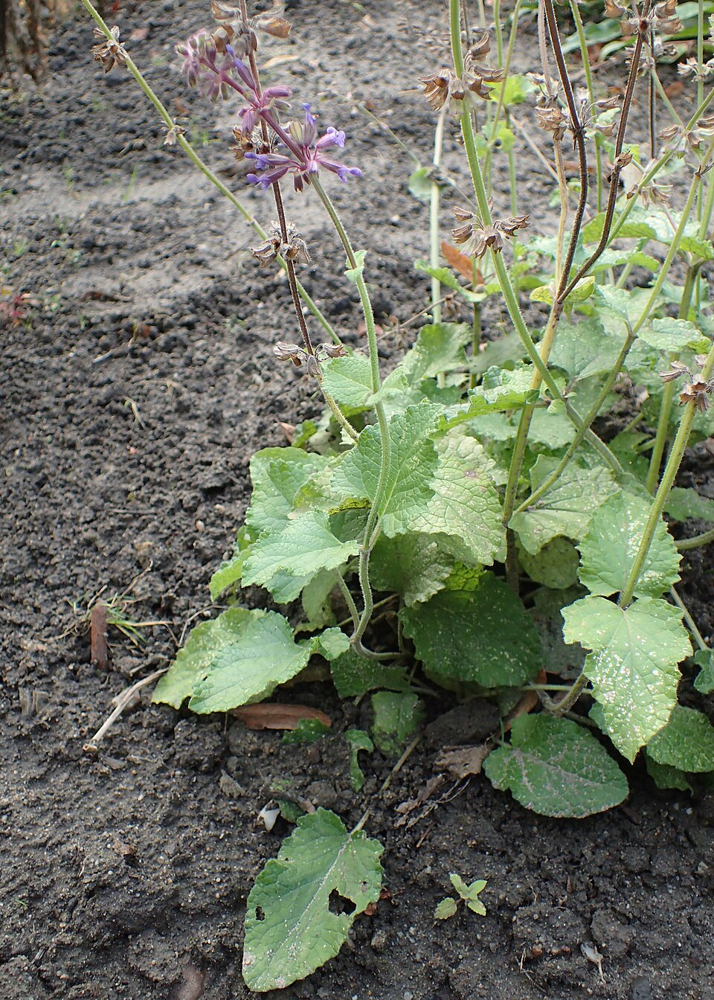
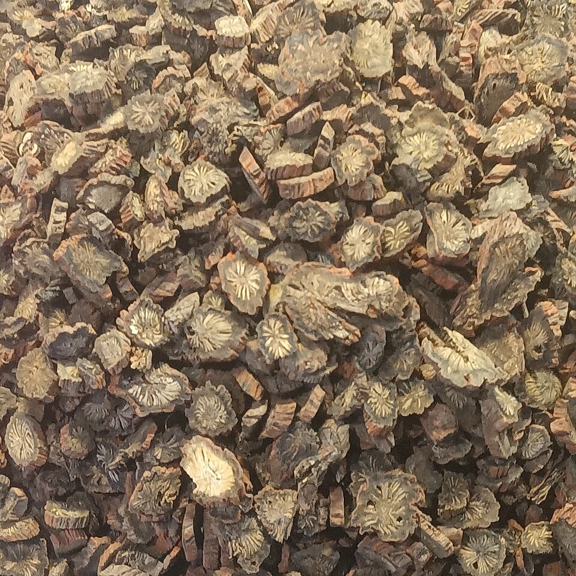

Dānshēn · Salvia root (Danshen)丹参
Salviae Miltiorrhizae Radix et Rhizoma · Blood-invigorating and stasis-dispelling herbs: herbs that invigorate blood and regulate menstruationSalviae Miltiorrhizae Radix et Rhizoma · 活血化瘀药·活血调经药




- Flavour · nature性味
- bitter; slightly cold苦，微寒
- Channels归经
- Heart, Liver心、肝经
- Direction升降浮沉
- Slightly cold and bitter, entering the blood level of the Heart and Liver; it invigorates blood and dispels stasis, and also cools blood, clears the Heart and eases vexation; its action is mild and dispels stasis without much damage to the body's upright qi性微寒，味苦，入心、肝血分；既能活血祛瘀，又能凉血清心、除烦安神；药性平和，祛瘀而不伤正，被前人称为活血要药
- Toxicity毒性
- Non-toxic无毒
- Dose (pharmacopoeia)用量（药典）
- 10–15 g (ceiling 15 g)（上限 15 克）
Decocted; wine-fried to strengthen the blood-invigorating action煎服；活血化瘀宜酒炙用 - Pregnancy孕期
- Caution in pregnancy孕妇慎用 The pharmacopoeia does not list Dan Shen as contraindicated in pregnancy, but it is a blood-invigorating herb, a class that textbooks advise using with caution in pregnancy; the Health Canada TCMI monograph requires products to be labelled not for use during pregnancy or breastfeeding. Avoid taking it on your own in pregnancy or while breastfeeding; if it is needed, leave the decision to a licensed practitioner or doctor.药典未单列丹参为孕妇禁忌，但丹参属活血化瘀药，教材将活血祛瘀药列为孕期慎用；加拿大卫生部 TCMI 专论要求产品标注孕期或哺乳期勿用。孕期与哺乳期请避免自行服用，必要时由持照中医师或医生判断。
- Health Canada加拿大卫生部
- Health Canada: monograph加拿大卫生部：有专论 Health Canada's NHPID monograph on Traditional Chinese Medicine Ingredients (TCMI), dated May 29, 2026, lists Salvia miltiorrhiza (Dan Shen) in Table 1, general medicinal ingredients. The monograph requires all products to state: do not use during pregnancy or breastfeeding; consult a health care practitioner before use if taking prescription drugs, if you have a serious condition or an acute infection; stop use and see a health care practitioner if symptoms persist or worsen.加拿大卫生部天然保健品数据库（NHPID）的「传统中药成分（TCMI）」专论（2026 年 5 月 29 日）收录了 Salvia miltiorrhiza（丹参），列于表 1 一般药用成分（general medicinal ingredients）。专论要求所有产品标注：孕期或哺乳期勿用；服用处方药、患有严重疾病或急性感染者，使用前须咨询医务人员；症状持续或加重时停用并就医。
- Conservation资源与保护
- Dan Shen supply is mainly cultivated; it is not on the CITES appendices and no special conservation restriction was found.丹参以栽培为主，未列入 CITES 附录，未检索到特别的保护限制。
- Source来源
- Salvia miltiorrhiza Bge.. Dried root and rhizome of Salvia miltiorrhiza, mint familySalvia miltiorrhiza Bge.（丹参）。唇形科植物丹参的干燥根和根茎
Traditional actions and indications功效与主治（传统）
🏛 Traditional statements, not efficacy claims; the modern evidence is graded further down.以下为传统说法，不是疗效主张；现代证据见下文分级。
- Invigorates blood and dispels stasis活血祛瘀
- Frees the channels and stops pain通经止痛
- Clears the Heart and eases vexation清心除烦
- Cools blood and reduces abscesses凉血消痈
Chest bi with heart pain, pain in the epigastrium, abdomen and flanks; abdominal masses and accumulations; heat bi with pain; vexation and insomnia; irregular menstruation, painful menstruation and amenorrhoea; sores and swollen painful abscesses.胸痹心痛、脘腹胁痛；癥瘕积聚；热痹疼痛；心烦不眠；月经不调、痛经经闭；疮疡肿痛。
How to recognise it怎么认
Growing植株 A perennial herb 30–100 cm tall, densely covered with soft and glandular hairs; stem square; leaves opposite and odd-pinnate; purple-blue lipped flowers in spring and summer, whorls forming terminal or axillary false racemes. The fleshy cylindrical root has vermilion-red skin, the origin of 'Dan' (red) in the name.多年生草本，高 30–100 厘米，全株密被柔毛和腺毛；茎四棱形；叶对生，奇数羽状复叶；春夏开紫蓝色唇形花，轮伞花序组成顶生或腋生的假总状花序。根肉质，圆柱形，外皮朱红色，是丹参得名「丹」的由来。
Decoction pieces饮片 Irregular thick slices; the outer skin is vermilion or dark brownish-red, rough with longitudinal wrinkles; the cut face may be cracked or fairly smooth and dense, with a brownish-red bark and a greyish-yellow or purple-brown wood showing yellowish-white radiating lines. Faint smell, slightly bitter and astringent taste.不规则的厚片；外表皮朱红色或暗棕红色，粗糙，具纵皱纹；切面有裂隙或略平整而致密，皮部棕红色，木部灰黄色或紫褐色，有黄白色放射状纹理。气微，味微苦涩。
Processing炮制
- Raw Dan Shen丹参（生用）：: Cleaned, softened, cut into thick slices and dried; cooler in nature, better for cooling blood, clearing the Heart and reducing abscesses除去杂质和残茎，洗净、润透，切厚片，干燥；性偏寒凉，善凉血清心、除烦消痈
- Wine-fried Dan Shen酒丹参：: Slices stir-fried with rice wine until slightly dry; the cold nature is softened and the blood-invigorating, menses-regulating action is stronger取丹参片，酒炙至微干；寒性缓和，活血祛瘀、调经之力增强
Cautions and incompatibilities使用注意与配伍禁忌
Not to be combined with Li Lu (a pharmacopoeia 'not to be used together' entry, also recorded in classical texts as clashing with Li Lu). Use with caution in heavy menstrual bleeding or a tendency to bleed; anyone taking anticoagulant or antiplatelet drugs (such as warfarin or aspirin) should first speak to a doctor or pharmacist. See the pregnancy field for pregnancy.不宜与藜芦同用（药典「不宜同用」，古籍亦载「反藜芦」）。月经量多、有出血倾向者慎用；正在服用抗凝或抗血小板药（如华法林、阿司匹林）者须先咨询医师或药师。孕期用药见孕期一栏。
- Dan Shen is not to be used together with Li Lu丹参不宜与藜芦同用 pharmacopoeia: do not combine药典不宜同用
Interactions with medicines与西药的相互作用
- E3 Warfarin and aspirin华法林、阿司匹林：: A small pilot study in healthy volunteers found that a Salvia miltiorrhiza–Pueraria combination product, taken with aspirin or warfarin, produced significant pharmacokinetic and pharmacodynamic interactions. The study tested a two-herb combination rather than Dan Shen alone, in healthy people rather than patients, so it cannot be read directly as a clinical dose guide. Anyone already taking these drugs should not add it on their own and should ask a doctor or pharmacist first.一项健康受试者的小型预试验显示，丹参与葛根的复方制剂与阿司匹林或华法林同服，会出现明显的药代动力学与药效学相互作用；研究对象是丹参—葛根复方，不是单味丹参饮片，样本为健康人而非患者，不能直接推断临床剂量。已在服用这两类药物者请勿自行加用，先咨询医师或药师。
Modern research, graded现代研究（分级）
- E1 A Cochrane systematic review of Danshen preparations for acute myocardial infarction concluded that more high-quality trials are needed to support clinical use, so human evidence for that use is currently insufficient.一项 Cochrane 系统评价关注丹参制剂用于急性心肌梗死，结论是需要更多高质量试验才能支持其临床应用；这说明该用途的人体证据目前不足。
- E3 A post-marketing safety evaluation of a Danshen-derived depside salt injection analysed the clinical characteristics of adverse reactions and the factors influencing them; the subject was an injectable product, not an oral decoction or dried slices.一篇关于丹参类注射剂（丹参多酚酸盐注射液）上市后安全性的评价，分析了该注射剂不良反应的临床特点及影响因素；研究对象是注射剂，不是口服煎剂或饮片。
- E3 A review discussed possible herb–drug interactions between Salvia miltiorrhiza roots and cardiovascular drugs, including how coexisting components affect the pharmacokinetic behaviour of the active compounds; it mainly gathers pharmacokinetic-level data.一篇综述讨论了丹参根与心血管药物之间可能发生的草药—药物相互作用，并涉及共存成分对活性化合物药代行为的影响；该综述主要汇总药代层面的资料。
- E1 A systematic review of experimental studies, mainly in animals and cells, examined Danshen against doxorubicin-induced cardiotoxicity; this is experimental evidence and has not been confirmed in patients.一项系统评价汇总的是实验研究（以动物和细胞实验为主）中丹参对多柔比星（阿霉素）心脏毒性的作用；这是实验证据，不等于已在患者中证实。
- E5 A review summarised mechanistic research on Salvia miltiorrhiza in myocardial ischemia-reperfusion injury and pointed to the need for further preclinical studies; this is mechanism research and not evidence of efficacy.有综述从心肌缺血再灌注损伤的机制角度总结了丹参的相关研究，并指出需要进一步的临床前研究；这属于机制研究，不构成疗效依据。
In the classics古籍原文
「丹參味苦微寒無毒。主治心腹邪氣，腸鳴幽幽如走水，寒熱積聚，破癥除瘕，止煩滿，益氣。」——神农本草经
Shennong Bencao Jing (Divine Farmer's Materia Medica)
The Shennong Bencao Jing records Dan Shen as bitter and slightly cold, used for evil qi in the heart and abdomen, cold and heat accumulations, breaking masses and dispelling lumps, and relieving vexation and fullness. This set its basic place as a Heart-entering blood-invigorating herb, and 'breaking masses and dispelling lumps' runs through its later use for stasis.《神农本草经》记丹参「味苦微寒」，主治心腹邪气、寒热积聚、破癥除瘕、止烦满，奠定了它入心、活血祛瘀的基本定位；其中「破癥除瘕」与后世以丹参治瘀血癥瘕一脉相承。
Where it is used: the web串联：它在哪些方里、连到哪里
Later formulas (Song to Qing)时方（宋元明清）
| Formula方 | Role角色 | Dose: original / today剂量：原书／今用 | Partners in the formula同方配伍 |
|---|---|---|---|
| Two-Cinnabar Pill二丹丸 | Minister臣 | original text: see the Chinese original兩半 | Shúdìhuáng (Prepared rehmannia root)熟地黄 · Asparagus root天冬 · Ophiopogon root麦冬 · Poria with hostwood茯神 · Gāncǎo (Licorice root)甘草 · Cinnabar (mercuric sulfide)丹砂 · Rénshēn (Ginseng (Asian))人参 · Acorus rhizome菖蒲 · Polygala root远志 |
| Nutrient-Aspect Clearing Decoction清营汤 | Minister臣 | original text: see the Chinese original丹參（二錢） | Shuǐniújiǎo (water buffalo horn)水牛角 · Shēngdìhuáng (raw rehmannia root)生地黄 · Xuánshēn (figwort root)玄参 · Dànzhúyè (lophatherum stem and leaf)淡竹叶 · Màidōng (ophiopogon tuber)麦冬 · Huánglián (coptis rhizome)黄连 · Jīnyínhuā (Japanese Honeysuckle Flower)金银花 · Liánqiào (forsythia fruit)连翘 |
| Celestial Emperor Heart-Supplementing Pill天王补心丹 | Minister臣 | original text: see the Chinese original炒 | Sheng Dihuang (raw rehmannia root)生地黄 · Rénshēn (Ginseng (Asian))人参 · Xuan Shen (scrophularia root)玄参 · Fúlíng (Poria)茯苓 · Jie Geng (platycodon root)桔梗 · Yuan Zhi (polygala root)远志 · Dāngguī (Chinese Angelica Root)当归 · Wu Wei Zi (schisandra fruit)五味子 · Tian Dong (asparagus tuber)天冬 · Mai Dong (ophiopogon tuber)麦冬 · Suan Zao Ren (spiny jujube seed)酸枣仁 · Bai Zi Ren (biota seed)柏子仁 |
Folk and single-herb remedies偏方、验方、单方
| Formula方 | Use用法 | Self-use能否自用 |
|---|---|---|
| Salvia, angelica, and peony lard ointment (breast abscess)丹参白芷芍药猪脂膏（妇人乳痈） | External use外用 | Literature record only: not advised for self-use仅作文献记录，不建议自行使用 |
Patterns reached through these formulas经由这些方连到的证
Exam notes (HER)考点（HER）
HER essentials: (1) category: it belongs to the herbs that invigorate blood and regulate menstruation, and the traditional saying that one herb Dan Shen equals the Four Substances decoction is a traditional summary of its blood-invigorating and blood-nourishing action; (2) bitter, slightly cold, enters the Heart and Liver channels; (3) actions: invigorates blood and dispels stasis, frees the channels and stops pain, clears the Heart and eases vexation, cools blood and reduces abscesses; (4) not to be used together with Li Lu; (5) raw it cools blood and clears the Heart, wine-fried it strengthens blood-invigoration; (6) use with caution in pregnancy and with anticoagulant or antiplatelet drugs such as warfarin and aspirin.HER 必考：①归类——活血调经药，「一味丹参，功同四物」是后世对其活血养血作用的说法，应理解为传统概括；②性味归经：苦、微寒，归心、肝经；③功效：活血祛瘀、通经止痛、清心除烦、凉血消痈；④使用注意：不宜与藜芦同用；⑤生用偏凉血清心，酒炙增强活血；⑥孕期慎用，与华法林、阿司匹林等抗凝抗血小板药合用须谨慎。
Sources依据
- Chinese Pharmacopoeia Commission. Pharmacopoeia of the People's Republic of China, 2020 edition, vol. I国家药典委员会《中华人民共和国药典》2020 年版一部
- Zhong Gansheng (ed.). Chinese Materia Medica (national TCM higher-education textbook series)钟赣生主编《中药学》（全国中医药行业高等教育规划教材）
- Health Canada, NHPID monograph: Traditional Chinese Medicine Ingredients (TCMI), May 29, 2026 ↗
- Wu et al. Danshen (Chinese medicinal herb) preparations for acute myocardial infarction. Cochrane Database Syst Rev. 2008 ↗
- Chang et al. Postmarketing safety evaluation: depside salt injection made from Danshen (Radix Salviae Miltiorrhizae). J Tradit Chin Med. 2014 ↗
- Chen et al. Salvia miltiorrhiza Roots against Cardiovascular Disease: Consideration of Herb-Drug Interactions. Biomed Res Int. 2017 ↗
- Yue et al. Salviae Miltiorrhizae Radix et Rhizoma protects against doxorubicin-induced cardiotoxicity: A systematic review. Phytomedicine. 2025 ↗
- Lan et al. Salvia miltiorrhiza: insights on the protective effect and mechanism of myocardial ischemia-reperfusion injury. Braz J Med Biol Res. 2025 ↗
- Zhang et al. Is it safe to take Radix Salvia Miltiorrhiza - Radix Pueraria Lobate product with warfarin and aspirin? A pilot study in healthy human subjects. J Ethnopharmacol. 2020 ↗